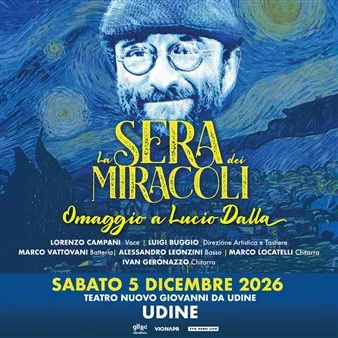

sab 5 dic · dalle 20:00
La sera dei miracoli
Ci sono artisti che appartengono a un'epoca e altri che, attraverso le loro canzoni, continuano a parlare al presente. Lucio Dalla appartiene senza dubbio alla seconda categoria. È da questa idea che nasce “La Sera dei Miracoli – Omaggio a Lucio Dalla”, il progetto di Good…
 Indicazioni
Indicazioni
- Costi e prenotazioni
- Costo non indicato · Prenotazione non indicata
- Programma
- Programma da verificare. Apri la fonte ufficiale per orari e possibili aggiornamenti.
- In caso di maltempo
- Nessuna indicazione specifica pubblicata.
- Note
- Acquisito automaticamente dalla fonte.
L’EVENTO
Descrizione completa
Ci sono artisti che appartengono a un'epoca e altri che, attraverso le loro canzoni, continuano a parlare al presente. Lucio Dalla appartiene senza dubbio alla seconda categoria. È da questa idea che nasce “La Sera dei Miracoli – Omaggio a Lucio Dalla” , il progetto di Good Vibrations Entertainment che porta sul palco le canzoni, le atmosfere e l'inconfondibile universo musicale di uno dei più originali protagonisti della musica italiana.
Uno spettacolo che non vuole soltanto riproporre i grandi successi di Dalla , ma riaccendere la forza e l'attualità di un repertorio entrato nell'immaginario collettivo. Canzoni capaci di cambiare registro, raccontare personaggi e sentimenti, passare dall'intimità alla leggerezza, dalla poesia all'ironia, senza mai perdere quella straordinaria capacità di arrivare direttamente a chi ascolta. Da “4 marzo 1943” a “Come è profondo il mare”, da “Piazza Grande” a “L'anno che verrà”, fino a “Caruso”, “Futura”, “Attenti al lupo” e a tanti altri brani che hanno segnato la storia della musica italiana: il repertorio di Dalla diventa il filo conduttore di una serata costruita per restituire al pubblico tutta la ricchezza e la varietà della sua scrittura.
Dopo il successo delle date estive negli anfiteatri, il progetto torna ora nei principali teatri italiani . L'unico appuntamento in Friuli Venezia Giulia – organizzato da VignaPR e FVG Music Live, in collaborazione con Good Vibrations Entertainment – si terrà sabato 5 dicembre 2026 (inizio ore 20:00) al Teatro Nuovo Giovanni da Udine . I biglietti per il nuovo appuntamento saranno in vendita a partire dalle ore 10:00 di mercoledì 16 settembre online su Ticketone.it e nei punti vendita autorizzati.
A interpretarlo sarà Lorenzo Campani , voce protagonista dello spettacolo, artista dalla grande esperienza live e teatrale, già interprete di Notre Dame de Paris di Riccardo Cocciante e protagonista di The Voice of Italy. Nel corso della sua carriera ha inoltre collaborato con artisti come Ligabue e Vasco Rossi, maturando una vocalità e una presenza scenica particolarmente adatte a confrontarsi con un repertorio complesso e sfaccettato come quello di Dalla . Sul palco, Campani sarà accompagnato da una formazione composta da Luigi Buggio alla direzione artistica e alle tastiere, Marco Vattovani alla batteria, Alessandro Leonzini al basso, Marco Locatelli e Ivan Geronazzo alle chitarre.
La dimensione musicale sarà accompagnata da una scenografia suggestiva e da un articolato disegno luci, pensati per costruire uno spettacolo capace di alternare momenti di grande intensità ad altri più intimi, seguendo le molte anime della produzione di Lucio Dalla . Perché la forza delle sue canzoni sta anche nella loro capacità di non esaurirsi con il tempo. Dalla ha saputo raccontare l'amore, la solitudine, la memoria, la città, il mare, i sogni e le contraddizioni dell'esistenza con uno sguardo personale e imprevedibile, trasformando storie apparentemente semplici in canzoni diventate patrimonio condiviso.
“La Sera dei Miracoli” nasce così come un incontro tra memoria e presente: un concerto per chi quelle canzoni le ha vissute, ma anche per chi continua a scoprirle e a riconoscersi nella loro straordinaria modernità.
“Omaggio a Lucio Dalla”
SABATO 5 DICEMBRE 2026, ore 20:00
UDINE, Teatro Nuovo Giovanni da Udine
Prezzi dei biglietti:
Platea gold € 40,00 + dp
Platea numerata € 38,00 + dp
Prima galleria € 34,00 + dp
Seconda galleria € 30,00 + dp
Terza galleria € 25,00 + dp
Biglietti in vendita a partire dalle ore 10:00 di mercoledì 16 settembre online su Ticketone.it e in tutti i punti vendita autorizzati.
IL PROGRAMMA
Programma e orari
Appuntamenti raccolti dalle fonti elencate. Dove manca un orario, non è ancora disponibile in questa scheda.
Programma pubblicato
- Dal 2026-12-05 al 2026-12-05
INFORMAZIONI UTILI
Prima di partire
- Controllare la fonte prima di partire.
ORGANIZZAZIONE